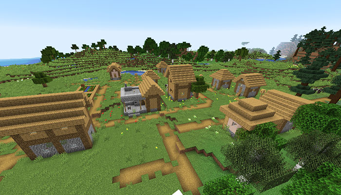
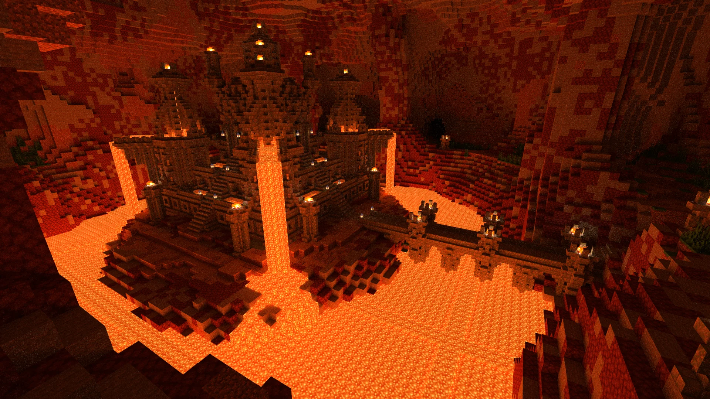
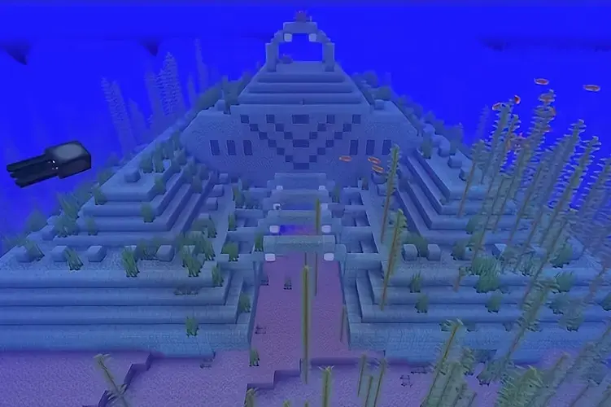
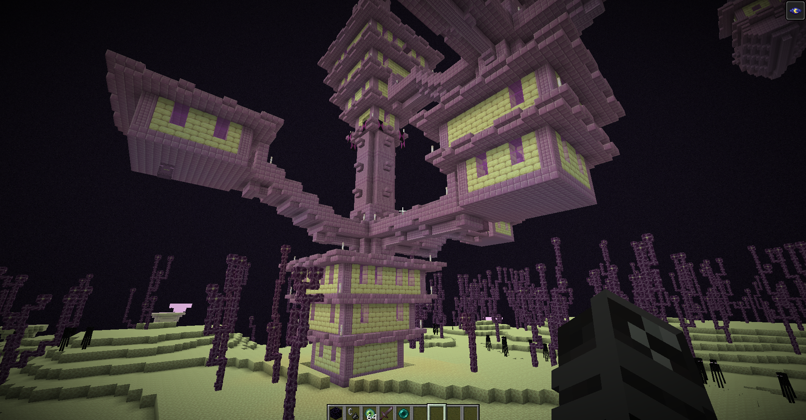

-

Aldea
Estructura comunitaria y pacífica compuesta por diversas casas, granjas y talleres donde habitan los aldeanos. Es una zona clave para el inicio de la partida, ya que permite realizar intercambios comerciales con esmeraldas, recolectar cultivos para alimentarte y aprovechar sus camas y recursos para resguardarte de los peligros nocturnos.
-

Templo del Desierto
Construcción antigua hecha de arenisca que destaca en medio de las dunas del desierto. Oculta en su interior una cámara secreta con cuatro cofres repletos de tesoros valiosos, pero requiere explorar con suma precaución, pues activar accidentalmente la placa de presión central desencadenará una trampa mortal de dinamita.
-

Fortaleza del Nether
Enorme y tenebroso complejo de puentes, torres y pasadizos fabricados con ladrillos del Nether. Es una ubicación de exploración obligatoria en la dimensión infernal, ya que alberga los generadores de blazes para obtener sus varas y los huertos de verrugas del Nether, ambos elementos indispensables para elaborar pociones.
-

Monumentos Oceánicos
Masiva edificación submarina hecha de prismarina que se encuentra oculta en las profundidades de los océanos profundos. Está celosamente custodiada por guardianes y tres guardianes ancianos, los cuales atacan a distancia con rayos de energía e infligen fatiga minera para dificultar el acceso a sus bloques de oro.
-

Ciudad del End
Estructura flotante de aspecto futurista situada en las islas lejanas del End. Sus altas torres están protegidas por los shulkers, criaturas que disparan proyectiles que te hacen levitar; explorarla ofrece las recompensas más valiosas de todo el juego, incluyendo armaduras encantadas y los preciados Elytras ocultos en sus barcos voladores.